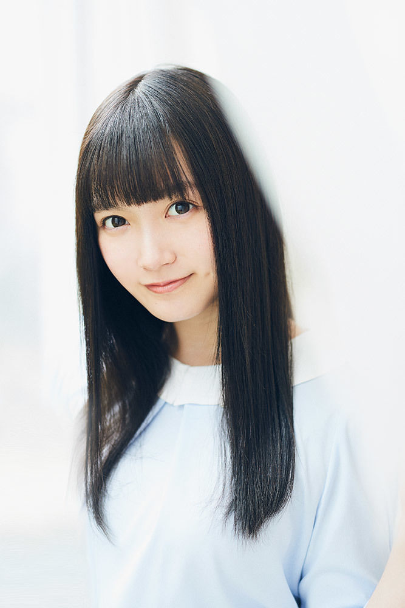
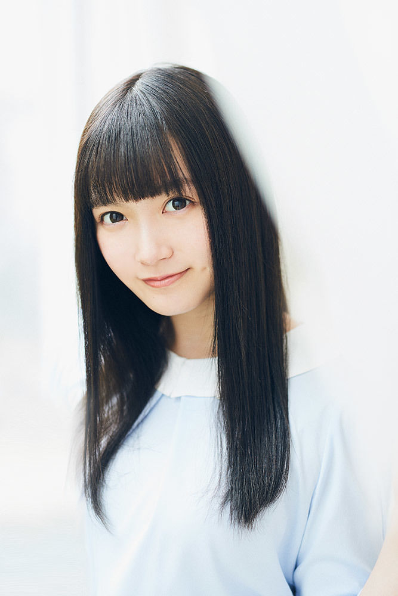
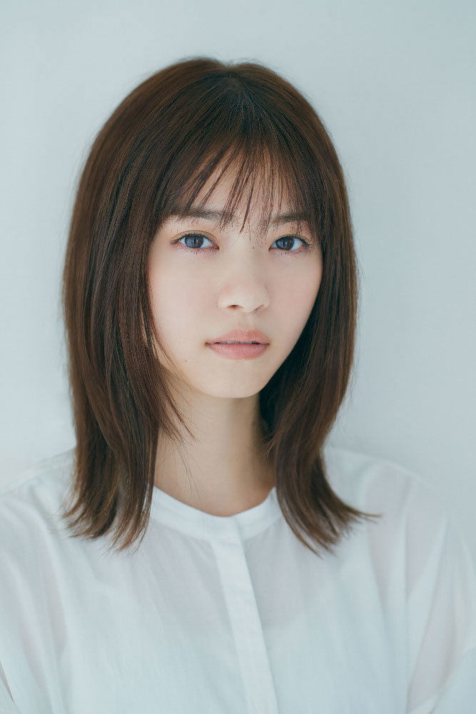
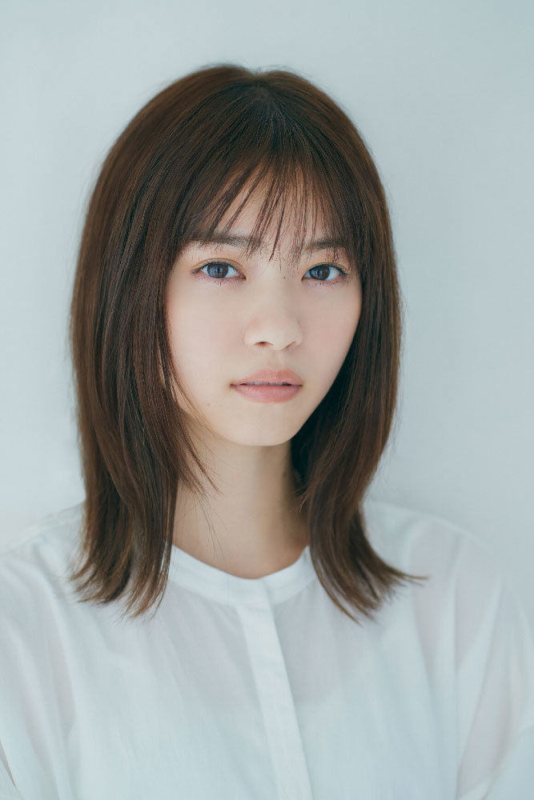

Introduction
Nogizaka46 has had a total of 78 original
members during their 4 generations (plus one Kennin member). As of
September 2021, Nogizaka46 has 39 members. Like AKB48, auditions to
recruit new members are held. Starting from the 2nd generation, these
members spent a period of time being Kenkyuusei. They were typically
"promoted" after participating in a song on a Nogizaka46 single. With
the arrival of the 3rd generation and their immediate participation on
the single (Influencer), they were "promoted" when they integrated into
Senbatsu or Under Members and the creation of their individual blogs.
With the Sakamichi Joint New Member Recruitment Audition in 2018, new
members were either directly added to the group, or underwent another
year as a Sakamichi Kenshusei, training and performing as a group for a
year.
 Akimoto Manatsu
Ikuta Erika
Saito Asuka
Takayama Kazumi
Higuchi Hina
Hoshino Minami
Wada Maaya
Akimoto Manatsu
Ikuta Erika
Saito Asuka
Takayama Kazumi
Higuchi Hina
Hoshino Minami
Wada Maaya
 Umezawa Minami
Umezawa Minami Iwase Yumiko
Eto Misa
Kashiwa Yukina
Kawago Hina
Kawamura Mahiro
Saito Chiharu
Iwase Yumiko
Eto Misa
Kashiwa Yukina
Kawago Hina
Kawamura Mahiro
Saito Chiharu
 Saito Yuuri
Sakurai Reika
Shiraishi Mai
Nakada Kana
Nakamoto Himeka
Saito Yuuri
Sakurai Reika
Shiraishi Mai
Nakada Kana
Nakamoto Himeka
 Nagashima Seira
Nishino Nanase
Noujo Ami
Hashimoto Nanami
Hatanaka Seira
Fukagawa Mai
Matsumura Sayuri
Miyazawa Seira
Yamato Rina
Wakatsuki Yumi
Nagashima Seira
Nishino Nanase
Noujo Ami
Hashimoto Nanami
Hatanaka Seira
Fukagawa Mai
Matsumura Sayuri
Miyazawa Seira
Yamato Rina
Wakatsuki Yumi